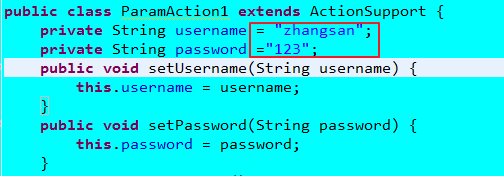

一、sturts2的Action中接收请求参数的方式：（封装请求参数的四种类型：JavaBean、数组、集合、map）


 (看好username需不需要引号)
(看好username需不需要引号)


2、配置局部消息资源包
一定要经过Action才行：
书写规范：在动作类所在包中，建立名字”动作类名-zh-CN.properties”的配置文件。动作类中访问，发现局部的比全局的优先级高。

方式一：在动作类中成员变量给予初始值

方式二：在配置文件中注入动作类的参数值（静态参数设置）
方式三、（重点）：动态参数的注入(表单请求参数)
形式1：Action 本身作为model对象，通过成员setter封装（一个名字为params的拦截器干的）
用动作类封装数据：定义字段名，提供setter方法，setter属性和表单的输入域的name保持一致
public class ParamAction1 extends ActionSupport {
private String username;
private String password;
public void setUsername(String username) {
this. username = username;
}
public void setPassword(String password) {
this. password = password;
}
public String execute() throws Exception {
System. out.println( "username=" + username + ", psssword=" + password);
//调用service方法来保存对象：save(this)
return SUCCESS;
}
}
形式二：动作类和模型分开
public class Student implements Serializable {
private String name;
private int age;
getter,setter.....
}
public class StudentAction extends ActionSupport {
private Student student = new Student();
public Student getStudent() {
System. out.println( "调用了getStudent方法" );
return student;
}
public void setStudent(Student student) {
System. out.println( "调用了setStudent方法" );
this. student = student;
}
public String execute() throws Exception {
System. out.println( student);
return SUCCESS;
}
}
<action name= "saveStudent" class= "com.itheima.actions.StudentAction" >
<result >/result.jsp </result >
</action >
<validators>
执行的过程：
框架调用StudentAction的getStudent()方法，得到返回值为null
框架创建了一个Student的实例，通过调用setStudent(Student s)，传递对象
框架再调用StudentAction的getStudent()方法，得到刚刚创建的对象
紧着着，调用student实例的setName和setAge方法，设置值。
形式三:模型驱动(面试):动作类和模型分开。与ValueStack值栈有关
public class Customer implements Serializable {
private String name;
private String city;
public String getName() {
return name;
}
public void setName(String name) {
this. name = name;
}
public String getCity() {
return city;
}
public void setCity(String city) {
this. city = city;
}
public String toString() {
return "Customer [name=" + name + ", city=" + city + "]";
}
}
注：模型驱动实际上是由一个拦截器来做的。modelDriven拦截器来做。把getModel方法返回的对象，压入一个叫做ValueStack的栈顶。struts框架就会根据表单的name属性，调用对应栈顶对象的setter方法，从而把请求参数封装进来。
4.封装数据到集合中：
public class CollectionAction extends ActionSupport {
private Collection<String> hobbies;
public Collection<String> getHobbies() {
return hobbies;
}
public void setHobbies(Collection<String> hobbies) {
this. hobbies = hobbies;
}
@Override
public String execute() throws Exception {
System. out.println( hobbies);
return super.execute();
}
}
<action name= "collection" class ="com.itheima.form.CollectionAction">
<result name ="success" type= "dispatcher">/success.jsp</result >
</action >
<form action= "${pageContext.request.contextPath} /collection" method= "post">
<input type ="checkbox" name="hobbies" value= "吃饭">吃饭
<input type ="checkbox" name="hobbies" value= "睡觉">睡觉
<input type ="checkbox" name="hobbies" value= "学">学
<input type ="submit">
</form >
5.封装数据到Map中：
public class CollectionAction extends ActionSupport {
private Collection<Employee> employees;
private Map<String, Employee> emps;
public Collection<Employee> getEmployees() {
return employees;
}
public void setEmployees(Collection<Employee> employees) {
this. employees = employees;
}
public Map<String, Employee> getEmps() {
return emps;
}
public void setEmps(Map<String, Employee> emps) {
this. emps = emps;
}
public String execute() throws Exception {
if( emps!= null){
for(Map.Entry<String, Employee> me:emps.entrySet()){
System. out.println(me.getKey()+ ":"+me.getValue());
}
}
return NONE;
}
}
<action name= "collectionAction2" class= "com.itheima.actions.CollectionAction" />
<action name ="collectionAction3" class= "com.itheima.actions.CollectionAction" />
二、类型转换：
1、用户界面传来的数据都是String：String---->其他类型
显示或者是数据回显：其他类型----->String
基本类型自动转换。
java.util.Date<-------->String(中国：Struts2默认按照yyyy-MM-dd本地格式进行自动转换)
数组 可以将多个同名参数，转换到数组中
显示或者是数据回显：其他类型----->String
基本类型自动转换。
java.util.Date<-------->String(中国：Struts2默认按照yyyy-MM-dd本地格式进行自动转换)
数组 可以将多个同名参数，转换到数组中
2、自定义类型转换器
String----------------->java.util.Date MM/dd/yyyy----->能转换
java.util.Date--------->String MM/dd/yyyy
步骤：
第一步：
String----------------->java.util.Date MM/dd/yyyy----->能转换
java.util.Date--------->String MM/dd/yyyy
步骤：
第一步：
编写一个类直接或间接实现com.opensymphony.xwork2.conversion.TypeConverter接口。一般选择继承com.opensymphony.xwork2.conversion.impl.DefaultTypeConverter覆盖掉public Object convertValue(Object value, Class toType)继承org.apache.struts2.util.StrutsTypeConverter(最简单的方便)第二步：注册类型转换器局部类型转换器：为某个动作类服务的（特服）
在动作类所在的包中，建立一个名称为“动作类名-conversion.properties”的配置文件
全局类型转换器：为所有的动作类服务的
在WEB-INF\classes目录下（也即src目录下）建立一个固定名称的配置文件：xwork-conversion.properties3、出现转换失败时的页面转向和错误消息提示
a、配置一个name=”input”的结果视图，一般指向用户输入数据的那个页面（转换失败，由ｃｏｎｖｅｒｓｉｏｎＥｒｒｏｒ拦截）
b、在01.jsp中使用struts2的标签显示字段有关的错误（后面的国际化再讲）
<%@ taglib uri="/struts-tags" prefix="s"%>
<s:fielderror/><s:actionerror/>c、配置提示信息为中文的
在动作类所在的包中，建立一个名称为：动作类名.properties的配置文件写法：key:invalid.fieldvalue.字段=错误提示


三、用户输入数据的校验
1、校验方式：
a：客户端校验。（防君子不防小人）在页面中写js脚本。
输入错误的话提醒比较及时；
减轻服务器的压力
b、服务器端校验。
数据安全
开发中：a+b
2、服务器端校验：
编程式校验：自己编写一个校验代码（缺点：验证规则都写在了代码中）
前提：动作类继承ActionSupport。
编程式校验：自己编写一个校验代码（缺点：验证规则都写在了代码中）
前提：动作类继承ActionSupport。
1、针对动作类中的所有动作进行校验
(看好username需不需要引号)2、针对指定的动作进行校验
方式一：写了一个validate方法，可以在不需要验证的动作方法前，使用
方式一：写了一个validate方法，可以在不需要验证的动作方法前，使用
方式二：validate方法有一定的书写规范。public void validate动作方法名（首字母大写）
总结：所有验证不通过或转换不通过的，框架都会转向name=”input”的结果视图。要显示错误提示，使用<s:fieldError/>,显示字段有关的错误提示
声明式校验：通过xml配置文件（方便）
1、针对动作类中的所有动作进行校验
在动作类所在的包中，建立一个名称为：”动作类名-validation.xml”配置文件：
1、针对动作类中的所有动作进行校验
在动作类所在的包中，建立一个名称为：”动作类名-validation.xml”配置文件：
说明：dtd约束在何处--->xwork-core-**.jar包中
2、针对指定的动作进行校验
方式一：使用@SkipValidation
方式二：声明文件遵循一定的书写规范：
动作类名-动作名（struts.xml配置文件中的）-validation.xml
2、针对指定的动作进行校验
方式一：使用@SkipValidation
方式二：声明文件遵循一定的书写规范：
动作类名-动作名（struts.xml配置文件中的）-validation.xml
3、struts2框架内置的声明式类型验证器
xwork-core-**.jar的
com.opensymphony.xwork2.validator.validators中的default.xml中
xwork-core-**.jar的
com.opensymphony.xwork2.validator.validators中的default.xml中
<validators>
<validator name ="required" class= "com.opensymphony.xwork2.validator.validators.RequiredFieldValidator" />
<validator name ="requiredstring" class= "com.opensymphony.xwork2.validator.validators.RequiredStringValidator" />
<validator name ="int" class= "com.opensymphony.xwork2.validator.validators.IntRangeFieldValidator" />
<validator name ="long" class= "com.opensymphony.xwork2.validator.validators.LongRangeFieldValidator" />
<validator name ="short" class= "com.opensymphony.xwork2.validator.validators.ShortRangeFieldValidator" />
<validator name ="double" class= "com.opensymphony.xwork2.validator.validators.DoubleRangeFieldValidator" />
<validator name ="date" class= "com.opensymphony.xwork2.validator.validators.DateRangeFieldValidator" />
<validator name ="expression" class= "com.opensymphony.xwork2.validator.validators.ExpressionValidator" />
<validator name ="fieldexpression" class= "com.opensymphony.xwork2.validator.validators.FieldExpressionValidator" />
<validator name ="email" class= "com.opensymphony.xwork2.validator.validators.EmailValidator" />
<validator name ="url" class= "com.opensymphony.xwork2.validator.validators.URLValidator" />
<validator name ="visitor" class= "com.opensymphony.xwork2.validator.validators.VisitorFieldValidator" />
<validator name ="conversion" class= "com.opensymphony.xwork2.validator.validators.ConversionErrorFieldValidator" />
<validator name ="stringlength" class= "com.opensymphony.xwork2.validator.validators.StringLengthFieldValidator" />
<validator name ="regex" class= "com.opensymphony.xwork2.validator.validators.RegexFieldValidator" />
<validator name ="conditionalvisitor" class= "com.opensymphony.xwork2.validator.validators.ConditionalVisitorFieldValidator" />
</validators>
给验证器注入参数：(找到对应的校验类,如：RequiredStringValidator，然后找其中的变量，有set方法的可以注入值)
3、自定义声明式校验
验证密码的强度
开发步骤：
1、编写一个类：实现Validator接口或者继承ValidatorSupport。如果是验证表单字段有关，建议继承FieldValidatorSupport。
开发步骤：
1、编写一个类：实现Validator接口或者继承ValidatorSupport。如果是验证表单字段有关，建议继承FieldValidatorSupport。
2、注册校验器
在WEB-INF\classes目录下，建立一个固定名称为validators.xml的配置文件
在WEB-INF\classes目录下，建立一个固定名称为validators.xml的配置文件
3、可以像使用requiredstring这样的验证器来使用了
四、国际化
1、配置全局国际化消息资源包
1.写资源包文件
2、配置全局消息资源包
3、如何访问
在动作类中：
前提，动作类继承ActionSupport
在动作类中：
前提，动作类继承ActionSupport
在页面中：
1）
2）自由指定消息资源包，借助struts2的有关国际化的标签：
如果消息资源包在com.itheima.resources.message_zh_CN.properties,则如下
2、配置局部消息资源包
一定要经过Action才行：
书写规范：在动作类所在包中，建立名字”动作类名-zh-CN.properties”的配置文件。动作类中访问，发现局部的比全局的优先级高。
3、包范围的消息资源包
也得经过action访问
书写有规范的，名称为package_zh_CN.properties,放在类的包中。可以被包中及子包的所有动作类来访问。
书写有规范的，名称为package_zh_CN.properties,放在类的包中。可以被包中及子包的所有动作类来访问。
总结